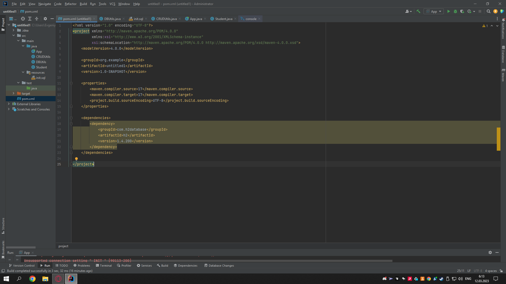

I don't understand what the problem is and how to view it. second month in programming
1 location error
private static String dbUrl = "jdbc:h2:mem:test; INIT = RUNSCRIPT FROM classpath:init.sql' ";`
2 text error
Exception in thread "main" java.lang.RuntimeException: >org.h2.jdbc.JdbcSQLNonTransientConnectionException: Неподдерживаемая >опция соединения " INIT "
Unsupported connection setting " INIT " [90113-200]
3 possible cause of the error

Try this:
static String dbUrl = "jdbc:h2:mem:test;INIT=RUNSCRIPT FROM 'classpath:init.sql'";
Note the removal of specific whitespaces from the example in the question (...;INIT=RUNSCRIPT ...), and the use of single quotes around 'classpath:init.sql' (the question is missing one of the single quotes).
See the RUNSCRIPT documentation for examples, including:
RUNSCRIPT FROM 'classpath:/com/acme/test.sql'
"jdbc:h2:mem:test;INIT=RUNSCRIPT FROM classpath:init.sql";- Youcef LAIDANI 11 Mar 2023 at 20:18"jdbc:h2:mem:test;INIT=RUNSCRIPT FROM 'classpath:init.sql'";. @YoucefLAIDANI - andrewJames 11 Mar 2023 at 21:38